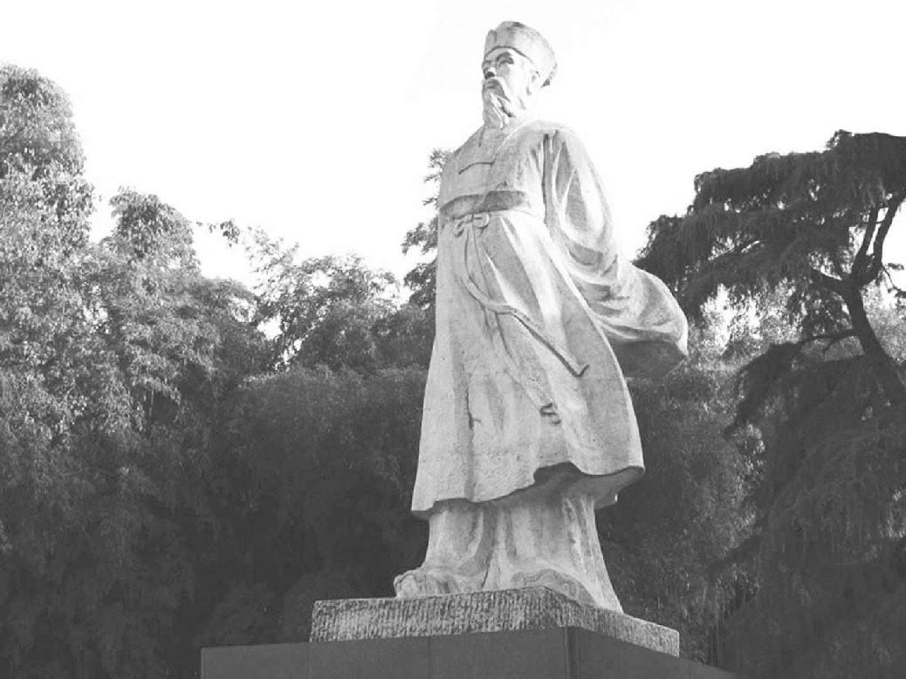

老练
宋神宗元丰三年至哲宗元祐八年
（一〇八〇年—一〇九三）
第十五章·东坡居士
第十六章·赤壁赋
第十七章·瑜伽与炼丹
第十八章·浪迹天涯
第十九章·太后恩宠
第二十章·国 画
第二十一章·谦退之道
第二十二章·工程与赈灾
第二十三章·百姓之友
苏东坡由现在起，由情势所迫，要一变而为农夫；由气质和自然的爱好所促使，要变成一个隐士。社会、文化、学问，读历史的教训，外在的本分责任只能隐藏人的本来面目。若把一个人由时间和传统所赋予他的那些虚饰剥除净尽，此人的本相便呈现于你之前了。苏东坡若回到民众之间，那他就犹如在水中的海豹。在陆地上拖着鳍和尾巴走的海豹，只能算是半个海豹。苏东坡最可爱，是在他身为独立自由的农人自谋生活的时候。中国人由心里就赞美头戴斗笠、手扶犁耙、立在山边田间的农人——倘若他也能作好诗，击牛角而吟咏。他偶尔喝醉，甚至常常喝醉而月夜登城徘徊。这时他成了自然中伟大的顽童——也许造物主根本就希望人是这副面貌吧。
在元丰三年（一〇八〇年）正月初一，苏东坡已和长子迈离开京都，启程前往幽居之地黄州，迈当时已经二十一岁。苏东坡是走最近的陆路赶往的，他把家眷留下由弟弟子由照顾，随后再去。贫穷的子由要带着自己的一大家人——七女、三男、两个女婿，再加上哥哥的眷属，前往新任所高安，在九江南部数百里之遥。酒监的职位并不像我们想象的那么好，只相当于官营的一个酒馆经理而已。坐船走了几个月，子由到了九江，把家眷留在那儿等候他，自己带着哥哥的家眷和朝云，还有两个孩子，顺长江上行往东坡的处所去。东坡是二月初一到的黄州，家眷是五月二十九到的。
黄州是长江边上一个穷苦的小镇，在汉口下面约六十里地。在等待家眷之时，苏东坡暂时住在定惠院，这个小寺院坐落在林木茂密的山坡上，离江边还有一段路。他和僧人一同吃饭，午饭与晚饭后，总是在一棵山楂树下散步，关于这种情形，他写了些极其可爱的诗。不久，身边便有了不少的朋友。徐太守热诚相待，常以酒宴相邀。长江对面，武昌（不是今日的武昌）的朱太守也常送酒食给他。在雨天，东坡睡到很迟才起床，快近黄昏时，散步很久，在起伏不平的东山麓漫游，在庙宇、私人庭园、树荫掩蔽的溪流等处，探胜寻幽。在别的日子，有时朋友来访，则一同到长江两岸的山里游玩。那一带是丘陵起伏、林木茂盛之区，乡野风光如画。南岸有礬山，耸立于湖溪交错的平原上。
苏东坡黄冈石像 雕像 现代
元丰二年（1079年），苏轼因为作诗讽刺新法，以“文字毁谤君相”的罪名被捕下狱，史称“乌台诗案”。出狱以后，苏轼被降职为黄州团练副使。这个职位相当低微，于是公余苏轼便带领家人开垦了城东的一块儿坡地，以帮补生计。“东坡居士”的别号便是他在这时起的。
苏东坡幸而死里逃生，至少是个惊心动魄的经验，他开始深思人生的意义。在六月他写的别弟诗里，他说他的生命犹如爬在旋转中的磨盘上的蝼蚁，又如旋风中的羽毛。他开始沉思自己的个性，而考虑如何才能得到心情的真正安宁。他转向了宗教。在他写的《安国寺记》里他说：
二月至黄。舍馆粗定，衣食稍给，闭门却扫，收召魂魄。退伏思念，求所以自新之方。反观从来举意动作，皆不中道，非独今之所以得罪者也。欲新其一，恐失其二。触类而求之，有不可胜悔者。于是喟然叹曰：“道不足以御气，性不足以胜习。不锄其本，而耘其末，今虽改之，后必复作。盍归诚佛僧，求一洗之？”得城南精舍，曰安国寺，有茂林修竹、陂池亭榭。间一二日辄往，焚香默坐，深自省察，则物我相忘，身心皆空，求罪垢所从生而不可得。一念清净，染污自落，表里翛然，无所附丽。私窃乐之。
与他宗教思想相反的一股力量，就是深藏他内心的儒家思想。他的儒家思想似乎又把他拖往了另一个方向。诚然，人可以在宗教之中寻取到安静，但是倘若佛教思想正确，而人生只是一种幻觉，人应当完全把社会弃置不顾，这样人类就非灭绝不可，那一切都空空如也才好呢！所以，在佛教要达到精神的空虚和无我的精神存在，就要完全摆脱个人的牵挂，而儒家是抱现实的思想，要对人类尽其职责义务，于是两种思想之间便有冲突。所谓解脱一事，只不过是在获得了精神上的和谐之后，使基层的人性附属于高层的人性，听其支配而已。一个人若能凭理性上的克己功夫获得此种精神上的和谐，他就不需完全离开社会才能获得解脱了。
比方说，在社会上有对抗邪恶一事。理学家朱熹批评苏东坡出狱后写的两首诗，说其中没有克己与自新之意。那两首诗如前所见，似乎还是以前老苏东坡的本色未改。问题是，他是否有意改过向善？他是否有意要三缄其口，国事有错误也绝不批评吗？对不太亲密的朋友，他是一个回答法；对最好的朋友，他是另一个回答法。
在苏东坡写给朋友的两封信里，他吐露了肺腑之言。一封是给至交李常的。李常曾写诗去安慰他，但是李常的诗太感伤，苏东坡不以为然，写信回答他。信上说：“仆本以铁心石肠待公，何乃尔耶？吾侪虽老且穷，而道理贯心肝，忠义填骨髓，直须谈笑于死生之际，若见仆困穷便相于邑，则与不学道者大不相远矣。……虽怀坎懔于时，遇事有可尊主泽民者，便忘躯为之，祸福得丧，付与造物。非兄，仆岂发此？看讫便火之。不知者以为诟病也。”
在控告苏东坡案中，王巩获罪甚重，现在流放在偏远的西南，苏东坡给他写过几封信。先表示己事使王巩受牵连，而受此苦难，至为难过，但接到王巩的信，知道王巩能于哲学中自求解脱。他回信中说：“知定国为可人，而不肖他日犹得以衰颜白发厕宾客之末也……”接着说起道家长生之术，他自己正在修行。“近颇知养生，亦自觉薄有所得，见者皆言道貌与往日殊别，更相阔数年，索我阆风之上矣。兼画得寒林墨竹，已入神品。行草尤工，只是诗笔殊退也，不知何故。……所寄临江军书，久已收得。二书反覆议论及处忧患者甚详，既以解忧，又以洗我昏蒙，所得不少也。然所谓‘非苟知之亦允蹈之’者，愿公尝诵此语也。杜子美在困穷之中，一饮一食，未尝忘君，诗人以来，一人而已”。
但是对老朋友章惇，他的说法又不同。章惇现今官居参政谏议执事（副宰相），曾经写信劝东坡改过自新。对这位朋友，东坡写了一封非常贴切的回信，悔过之意溢于言表。写得再得体不过，简直可以呈给天子龙目御览了。其文如下：
“平时唯子厚与子由极口见戒，反覆甚苦。而轼强狠自用，不以为然。及在囹圄中，追悔无路，谓必死矣。不意圣主宽大，复遣视息人间。若不改者，轼真非人也。……轼昔年粗亦受知于圣主，使少循理安分，岂有今日？追思所犯，真无义理，与病狂之人蹈河入海者无异。方其病作，不自觉知，亦穷命所迫，似有物使。及至狂定之日，但有惭耳。而公乃疑其再犯，岂有此理哉？……”
随后又叙述当时生活状况：
“黄州僻陋多雨，气象昏昏也。鱼稻薪炭颇贱，甚与穷者相宜。然轼平生未尝作活计，子厚所知之。俸入所得，随手辄尽。而子由有七女，债负山积，贱累皆在渠处，未知何日到此。见寓僧舍，布衣蔬食，随僧一餐，差为简便。以此畏其到也。穷达得丧，粗了其理，但禄廪相绝，恐年载间，遂有饥寒之忧，不能不少念。然俗所谓水到渠成，至时亦必自有处置，安能预为之愁煎乎？初到，一见太守，自馀杜门不出。闲居未免看书，唯佛经以遣日，不复近笔砚矣。”
家眷到达之后，苏东坡的生活似乎安定下来，不过等他的钱用完之后，日子要如何过，他还没想到。他的两个小儿子迨和过，一个十二岁，一个十岁。由于太守的礼遇，他们还能住在临皋亭，此地后来因苏东坡而得名。此处本是驿亭，官员走水路时，经此可以在此小住。苏东坡给一个朋友写道：“寓居去江干无十步，风涛烟雨，晓夕百变。江南诸山在几席上，此幸未始有也。”此地是够美，但是其风景之美主要还是来自诗人的想象。他对那栋夏天对着大太阳的简陋小房子情有独钟，别的旅客一旦真看见，就会废然失望的。后来，又在那栋房子一边加了一间书斋给他用，他便吹嘘说，他午睡初醒，忘其置身何处，窗帘拉起，于坐榻之上，可望见水上风帆上下，远望则水空相接，一片苍茫。
临皋亭并不见得是可夸耀，风光之美一半在其地方，另一半则在观赏风景之人。苏东坡是诗人，能见到感到别人即便在天堂也见不到感不到的美。他在札记里写道：“东坡居士酒醉饭饱，倚于几上，白云左绕，清江右洄，重门洞开，林峦坌入。当是时，若有思而无所思，以受万物之备。惭愧，惭愧。”一封写给范镇儿子的信，语调则近诙谐，他说：“临皋亭下不数十步，便是大江，其半是峨眉雪水。吾饮食沐浴皆取焉，何必归乡哉？江山风月，本无常主，闲者便是主人。问范子丰新第园池，与此孰胜？所不如者，上无两税及助役钱耳。”
不过苏东坡确是生活困难，他花钱有一个特别预算方法，这是他在给秦少游的信里说的：“公择近过此，相聚数日，说太虚不离口。莘老未尝得书，知未暇通问。……初到黄，廪入既绝，人口不少，私甚忧之。但痛自节俭，日用不得过百五十（等于美金一角五分）。每月朔便取四千五百钱，断为三十块，挂屋梁上。平旦用画叉挑取一块儿，即藏去叉。仍以大竹筒别贮用不尽者，以待宾客。此贾耘老（贾收）法也。度囊中尚可支一岁有馀。至时，别作经画，水到渠成，不须预虑。以此胸中都无一事。”
由临皋亭苏东坡可以望长江对岸武昌的山色之美。他有时芒鞋竹杖而出，雇一小舟，与渔樵为伍，消磨一日的时光。他往往被醉汉东推西搡或粗语相骂，“自喜渐不为人识”。有时过江去看同乡好友王齐愈。每逢风狂雨暴，不能过江回家，便在王家住上数日。有时自己独乘一小舟，一直到樊口的潘丙酒店，他发现那儿的村酒并不坏。那个地区产橘子、柿子，芋头长到尺来长。因为江上运费低廉，一斗米才卖二十文。羊肉尝起来味美如同北方的牛肉。鹿肉甚贱，鱼蟹几乎不论钱买。岐亭酒监藏书甚多，以将书借人阅读为乐事。太守家有上好厨师，常邀东坡到家宴饮。
在元丰四年（一〇八一年），苏东坡真正务农了。他开始在东坡一片田地里工作，自称“东坡居士”。他过去原想弃官为农，没料到在这种情形之下被迫而成了农夫。在他那《东坡八首》前面的小序中说：“余至黄州二年，日以困匮，故人马正卿哀余乏食，为于郡中请故营地数十亩，使得躬耕其中。地既久荒，为茨棘瓦砾之场，而岁又大旱，垦辟之劳，筋力殆尽。释耒而叹，乃作是诗，自愍其勤。庶几来岁之入以忘其劳焉。”东坡农场实际上占地约五十亩，在黄州城东约三分之一里，坐落在山坡上。房子在顶上，共三间，俯见茅亭，亭下就是有名的雪堂。雪堂前面有房五间，是到黄州后二年的二月雪中竣工的。墙上有诗人自己画的雪中寒林和水上渔翁。后来他就在此地宴请宾客。宋朝大山水画家米芾，那时才二十二岁（作者笔误，实为三十二岁——编者注），就是到雪堂认识的苏东坡，并与苏东坡论画。宋朝诗人陆游是在孝宗乾道六年（一一七〇年）十月（据陆游《入蜀记》为八月——编者注）到的东坡，是苏东坡去世后约七十年。他曾记述雪堂正中间挂着苏东坡一张像，像上所画东坡身着紫袍，头戴黑帽，手持藤杖，倚石而坐。
雪堂的台阶下有一小桥，横跨一小沟而过，若非下雨，沟内常干涸。雪堂之东，有高柳树一株，为当年所手植，再往东，有一小水井，中有冷泉，颇清冽，并无其他可取之处，只是诗人当年取水处而已。往东的低处，有稻田、麦田、一带桑林菜圃，为一片长地，另有一片大果园。他在他处种有茶树，是在邻近友人处移来的。
在农舍后面是远景亭，位于一小丘之上，下面乡野景色，一览无遗。他的西邻姓古，有一片巨竹林园，竹茎周长约七寸，枝叶茂密，人行其中，不见天日。苏东坡就在此浓荫之中，消磨长夏，并寻找干而平滑的竹箨，供太太做鞋的衬里之用。
苏东坡如今是真正耕作的农夫，并不是地主。在和友人孔平仲的一首诗里，他说：
去年东坡拾瓦砾，自种黄桑三百尺。 今年刈草盖雪堂，日炙风吹面如墨。
有一段日子，久旱不雨，后来下了雨，苏东坡和农人完全一样快活而满足，他写诗道：
沛然例赐三尺雨，造物无心恍难测。 ………… 老夫作罢得甘寝，卧听墙东人响屐。 ………… 腐儒粗粝支百年，力耕不受众目怜。 ………… 会当作塘径千步，横断西北遮山泉。 四邻相率助举杵，人人知我囊无钱。
建筑可以说是苏东坡的本性，他是决心要为自己建筑一个舒适的家。他的精力全用在筑水坝，建鱼池，从邻居处移树苗，从老家四川省托人找菜种上。在孩子跑来告诉他好消息，说他们打的井出了水，或是他种的地上冒出针尖般小的绿苗，他会欢喜得像孩子般跳起来。他看着稻茎立得挺直，在微风中摇曳，或是望着沾满露滴的茎在月光之下闪动，如串串的明珠，他感到得意而满足。他过去是用官家的俸禄养家口，现在他才真正知道五谷的香味。在较高处他种麦子，一个好心肠的农人来指教他说，麦苗初生之后，不能任其生长，若打算丰收，必须让初生的麦苗由牛羊吃去，等冬尽春来时，再生出的麦苗才能茂盛。等他小麦丰收，他对那个农夫的指教无限感激。
苏东坡的邻人和朋友是潘酒监、郭药师、庞大夫、农夫古某；还有一个说话大嗓门儿跋扈霸道的婆娘，常和丈夫吵嘴，夜里像猪一般啼叫。黄州太守徐大受、武昌太守朱寿昌也是对苏东坡佩服得五体投地的人。再一个是马梦得（字正卿），始终陪伴着苏东坡，而且非常忠实可靠，过去已经追随苏东坡二十年，非常信任他、崇拜他，现在该陪着受罪过穷苦日子了。苏东坡曾说，他的朋友跟随他而想发财致富，那如同龟背上采毛织毯子。他在诗里叹息：“可怜马生痴，至今夸我贤。”四川眉州东坡的一位同乡、一个清贫的书生，名叫巢谷，特意来做东坡孩子的塾师。东坡的内兄在东坡来到黄州的第一年，曾来此和他们住了一段日子，后几年，子由的几个女婿曾轮流来此探望。苏东坡又给弟弟物色到一个女婿。根据子由的诗，对方从来没见过他就答应了婚事。那时苏东坡又吸引了一些古怪的人物，其中两个是道士，不但深信道教，而且是闲云野鹤般四海邀游的。因为苏东坡对长生的奥秘甚感兴趣，子由特别介绍其中一个去见苏东坡，此人据说已经一百二十七岁，后来这位道长就成了苏家的常客。第三年，诗僧参寥去看东坡，在苏家住了一年光景。但是东坡最好的朋友是陈慥，当年苏东坡少壮时曾和他父亲意见不合，终致交恶。陈慥住家离岐亭不远。东坡去看过他几次，陈慥在四年内去看过苏东坡七次。由于一个文学掌故，陈慥在中国文学史上以惧内之癖而名垂千古了。今天中文里有“季常之癖”一个典故，季常是陈慥的字。陈季常这个朋友，苏东坡是可以随便和他开玩笑的。苏东坡在一首诗里开陈季常的玩笑说：“龙丘居士亦可怜，谈空说有夜不眠。忽闻河东狮子吼，拄杖落手心茫然。”因为这首诗，在文言里用“河东狮吼”就表示惧内，而陈季常是怕老婆的丈夫，这个名字也就千古流传了。不过这首诗解释起来还有漏洞。据我们所知，陈季常的家庭生活很舒服自在，而且尚有艳福。再者“狮子吼”在佛经中指如来正声。我想可能的理由是陈季常的太太一定嗓门儿很高，苏东坡只是拿他开个玩笑而已。直到今天，“狮子吼”还是指絮絮不休的妻子。倘若苏东坡说是“母狮吼”，就恰当多了。
苏东坡家庭很幸福，在他的一首诗里，他说妻子很贤德。这句话的意思是他妻子并不像他好多朋友的妻子，或是过去历史上好多名学者的妻子那样凌虐丈夫。虽然长子迈这时也能写诗，但几个儿子并没有什么才华。晋朝大诗人陶潜也以忧伤认命的心情写过一首《责子》诗，说儿子好坏全是天命，自己何必多管，他说：“天运苟如此，且进杯中物。”苏东坡说：“子还可责同元亮，妻却差贤胜敬通。”敬通为东汉学者。苏东坡这句诗自己加的注脚里说：“仆文章虽不逮冯衍，而慷慨大节乃不愧此翁。衍逢世祖英睿好士而独不遇，流离摈逐，与仆相似。而衍妻妒悍甚，仆少此一事，故有‘胜敬通’之句。”大约在此时，东坡收朝云为妾。我们记得，苏东坡的妻子在杭州买朝云时，她才十二岁。按照宋朝时的名称，我们可以说她是苏太太的妾。妻子的丫鬟可以升而为丈夫的妾，在古代中国是极平常的事。如此一个妾，无论在哪方面都不失为太太的助手。因为妻子要伺候丈夫，比如准备洗澡水，妾就比一个普通丫鬟方便得多，不必在丈夫面前有所回避了。朝云现在已经长大，天资极佳，佩服苏东坡的人都很赞赏她。有人甚至说，在苏家把她买进门时，她已经是个富有才艺的杭州歌妓。但仔细研究，则知实际并不如此。由苏东坡自己写的文字上看，朝云是来到苏家才开始学读与写。佩服苏东坡的人都对朝云有好感，朝云是当之无愧的，因为苏东坡晚年流放在外，始终随侍左右的便是朝云。在元丰六年（一〇八三年），朝云生了一个儿子，起名叫遁儿。在生下三天举行洗礼时，苏东坡写诗一首，用以自嘲：
人皆养子望聪明，我被聪明误一生。 唯愿孩儿愚且鲁，无灾无难到公卿。
苏东坡自己善于做菜，也乐意自己做菜吃，他太太一定颇为高兴。根据记载，苏东坡认为在黄州猪肉极贱，可惜“富者不肯吃，贫者不解煮”，他颇引为憾事。他告诉人一个炖猪肉的方法，极为简单。就是用很少的水煮开之后，用文火炖上数小时，当然要放酱油。他做鱼的方法是今日中国人所熟知的。他先选一条鲤鱼，用冷水洗，擦上点儿盐，里面塞上白菜心。然后放在煎锅里，放几根小葱白，不用翻动，一直煎，半熟时，放几片生姜，再浇上一点儿咸萝卜汁和一点儿酒。快要好时，放上几片橘子皮，趁热端到桌上吃。他又发明了一种青菜汤，就叫作东坡汤。这根本是穷人吃的，他推荐给和尚吃。方法就是用两层锅，米饭在菜汤上蒸，同时饭菜全熟。下面的汤里有白菜、萝卜、油菜根、荠菜，下锅之前要仔细洗好，放点儿姜。在中国古时，汤里照例要放进些生米。在青菜已经煮得没有生味道之后，蒸的米饭就放入另一个漏锅里，但要留心莫使汤碰到米饭，这样蒸汽才能进得均匀。
在这种农村气氛里，他觉得自己的生活越来越像田园诗人陶潜的生活，他对陶潜极其佩服。陶潜也是因为彭泽令时，郡遣督邮至，县吏告诉他应当穿官衣束带相见，陶潜不肯对上方派来的税吏折腰，即解印绶去职，归隐农桑。苏东坡写过一首诗，说陶潜一定是他的前身。这种说法若出诸一个小诗人之口，未免狂妄自大，若苏东坡说出来，只觉得妥当自然。他越读陶诗，越觉得陶诗正好表现自己的情思和生活。
有些乐事，只有田园诗人才能享受。在弃官归隐时，陶潜写了一篇《归去来兮辞》，只可惜不能歌唱。苏东坡由于每天在田亩耕作的感想，把《归去来兮辞》的句子重组，照民歌唱出，教给农夫唱，他自己也暂时放下犁耙，手拿一根小棍，在牛角上打拍子，和农夫一齐唱。
苏东坡很容易接受哲学达观思想的安慰。在雪堂的墙上门上，他写了三十二个字给自己昼夜观看，也向人提出四种警告：
出舆入辇，蹶痿之机。 洞房清宫，寒热之媒。 皓齿蛾眉，伐性之斧。 甘脆肥浓，腐肠之药。
失去人间美好的东西之人才有福气！苏东坡能够到处快乐满足，就是因为他持这种幽默的看法。后来他被贬谪到中国本土之外的琼崖海岛，当地无医无药，他告诉朋友说：“每念京师无数人丧生于医师之手，予颇自庆幸。”
苏东坡觉得他劳而有获，心中欢喜，他写出：“某见在东坡，作陂种稻，劳苦之中亦自有乐事。有屋五间，果菜十数畦，桑百馀本。身耕妻蚕，聊以卒岁也。”
苏东坡现在衣食足堪自给，心满意足。他今日之使我们感到亲切自然之处，是那一片仁爱心。当年在他所住地区溺死初生婴儿的野蛮风俗，最使他痛心。他给武昌太守写过一封信，太有价值，并不是因为文辞好，而是内容好。英国十八世纪作家斯威夫特曾向贵族推荐婴儿肉为美味，并说此举为大举杀害婴儿的有力计策，即便是当讽刺话来说，我常常纳闷儿他何以竟说得出口？斯威夫特是当笑话说的，但是这种恶劣玩笑是苏东坡所不能领略的。苏东坡从本地一个读书人口中刚一听到这杀婴恶俗，立刻提笔给朱太守写了一封信，请朋友带信亲身去见太守。这是那封信：
与朱鄂州书
轼启：
……昨日武昌寄居王殿直天麟见过，偶说一事，闻之酸辛，为食不下。念非吾康叔之贤，莫足告语，故专遣此人。俗人区区，了眼前事，救过不暇，岂有馀力及此度外事乎？天麟言：岳鄂间田野小人，例只养二男一女，过此辄杀之，尤讳养女，以故民间少女多鳏夫。初生辄以冷水浸杀，其父母亦不忍，率常闭目背面，以手按之水盆中，咿嘤良久乃死。有神山乡百姓石揆者，连杀两子。去岁夏中，其妻一产四子。楚毒不可堪忍，母子皆毙。报应如此，而愚人不知创艾。天麟每闻其侧近有此，辄驰救之，量与衣服饮食，全活者非一。既旬日，有无子息人欲乞其子者，辄亦不肯。以此知其父子之爱，天性故在，特牵于习俗耳。
闻鄂人有秦光亨者，今已及第，为安州司法。方其在母也，其舅陈遵，梦一小儿挽其衣，若有所诉。比两夕，辄见之，其状甚急。遵独念其姊有娠将产，而意不乐多子，岂其应是乎？驰往省之，则儿已在水盆中矣，救之得免。鄂人户知之。
准律，故杀子孙，徒二年，此长吏所得按举。愿公明以告诸邑令佐，使召诸保正，告以法律，谕以祸福，约以必行，使归转以相语。仍录条粉壁晓示，且立赏召人告官，赏钱以犯人及邻保家财充，若客户则及其地主。妇人怀孕，经涉岁月，邻保地主，无不知者。若后杀之，其势足相举，觉容而不告，使出赏固宜。若依律行遣数人，此风便革。公更使令佐各以至意诱谕地主豪户，若实贫甚不能举子者，薄有以赒之。人非木石，亦必乐从。但得初生数日不杀，后虽劝之使杀，亦不肯矣。自今以往，缘公而得活者，岂可胜计哉！
佛言杀生之罪，以杀胎卵为最重。六畜犹尔，而况于人。俗谓小儿病为无辜，此真可谓无辜矣。悼耄杀人犹不死，况无罪而杀之乎？公能生之于万死中，其阴德十倍于雪活壮夫也。……
轼向在密州，遇饥年，民多弃子。因盘量劝诱米，得出剩数百石别储之，专以收养弃儿，月给六斗。比期年，养者与儿，皆有父母之爱，遂不失所，所活亦数千人。此等事，在公如反手耳。恃深契，故不自外。不罪！不罪！此外，唯为民自重。不宣。轼再顿首。
苏东坡自己成立了一个救儿会，请心肠慈悲、为人正直的邻居读书人古某担任会长。救儿会向富人募捐，请每年捐助十缗，多捐随意，用此钱买米、买布、买棉被。古某掌管此钱，安国寺一个和尚当会计，主管账目。这些人到各乡村调查贫苦的孕妇，她们若应允养育婴儿，则赠予金钱、食物、衣裳。苏东坡说，如果一年能救一百个婴儿，该是心头一大喜事。他自行每年捐出十缗钱。他行的才是最上乘的佛教教义。
我总以为，不管何处，只要人道精神在，宗教即可再兴。人道精神一死，宗教也随之腐烂了。